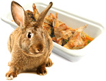

Кролики — общее название нескольких родов млекопитающих из семейства зайцев. Кролики отличаются от зайцев тем, что их детёныши обычно рождаются слепыми и голыми и выращиваются в норах. Живет кролик в среднем около 10 лет.Кролиководство – перспективная отрасль животноводства. Высокая плодовитость и скороспелость кроликов позволяют получать в год от одной крольчихи 30 и более крольчат, около 60–70 кг мяса (в живой массе), 25–30 шкурок, а от крольчих пуховых пород с приплодом – около 1 кг пуха. При хорошо налаженных условиях кормления и содержания в хозяйствах на 1 кг прироста затрачивается всего 3,3–3,5 кг корма.
Мясо кролика отличается исключительно высокими питательными достоинствами. По химическим, морфобиохимическим и технологическим качествам оно превышает мясо других животных.
По цвету мясо кроликов белое с небольшим розовым оттенком, почти без привкуса, мягкое и плотное по консистенции, не жирное, с тонковолокнистыми мышцами, тонкими костями, не значительным содержанием холестерина и пуриновых образований, которое имеет высокую способность связывать воду. У хорошо откормленных кроликов есть небольшие жировые прослойки, которые обусловливают нежную консистенцию и мясо.
В среднем в кроличьей тушке содержится 84-85% мышечной ткани, которые значительно больше, чем у коней (60-65%), большого рогатого скота (57-62%), овец (50-60%), свиней (40-52%) и цыплят - бройлеров (51-53%).
Полезные свойства кроликаВ мясе кроликов содержится полноценный белок, жир, минеральные вещества и витамины. Рядом с курятиной и телятиной, оно относится к так называемому белому мясу и отличается высоким содержанием полноценного белка, тяжело усваиваемых коллагенов и эластина в нем сравнительно имело.
В белке мяса кролики выявлены 19 аминокислот, включая все незаменимые. Ценным является то, что тепловая обработка не меняет качественного состава аминокислот мяса, а влияет только на их количество. Более всего в крольчатине содержится незаменимой аминокислоты Лизина - 10,43%, метионина и триптофана - соответственно 2,37 и 1,55%. Возраст животного на содержание аминокислот влияет незначительно.
Минеральные вещества в мышечной ткани составляют 1-1,5%. По минеральному и витаминному составу крольчатина превосходит все другие виды мяса. В ней много железа (почти в два раза больше, чем в свинине), фосфора (220мг в 100г), магния (25мг в 100г) и кобальта , в достаточном количестве содержится меди, калия, марганца, фтора, цинка. Солей натрия содержится относительно мало.
По содержанию витаминов мясо кроликов превосходит мясо свиней и других животных. В нем много витамином - никотиноамида, С - Аскорбиновой кислотой, В6 - пиродоксином, В12 - кобаламином и, вследствие этого крольчатина незаменимая в диетическом питании. В сравнении с жиром других видов животных, кроличий - биологически более ценный, потому что богат полиненасыщенными жирными кислотами, в частности - дефицитной арахидоновой. Он хорошо усваивается организмом и по качеству лучше бараньего, свиного.
Кроличий жир целебный, его используют как лечебное средство. При бронхите его принимают внутренне, при сильном кашле кашле растирают им грудь, при жесткости кожи рук втирают в кожу. Жир используют как в чистом виде, так и в смеси с медом. Смесь готовят в соотношении: 2:1, то есть на две - три части жира одну часть меда<. Такая смесь имеет большую целебную силой, действует быстро и радикально, полностью усваивается организмом. Из крольчатины можно приготовить намного больший ассортименты блюд, чем из куp - бройлеров и индеек.
Учитывая высокую биологическую ценность, мясо кроликов рекомендуют включать в меню людям всех возрастов, а также широко использовать в лечебном питании. По мнению диетологов, регулярное употребление кроличьего мяса содействует нормализации жирового обмена, поддержке в организме оптимального баланса питательных веществ. В связи с этим, крольчатину назначают больным с нехваткой травных соков, при таких заболеваниях, как гастрит, язвенная болезнь желудка и двенадцатиперстной кишки, колиты и энтероколиты, заболевания печени и желчных путей, гипертоническая болезнь, атеросклероз, заболевания сердца, почек, сахарный диабет и другие.
При заболеваниях почек очень хороший лечебный эффект дает употребление в пищу печени кроликов. Особенно полезно кроличье мясо для детей, людей преклонного возраста и лиц, которые страдают лишним весом, потому что оно имеет невысокую калорийность. В 100г крольчатины содержится только 168 ккал, калорийность баранины 319 ккал, говядины 274-335 и свинины - 389 ккал.
Кроличье мясо имеет замечательные кулинарные свойства,
из него готовят значительно больше блюд, чем из мяса птиц.
Кроме того, крольчатина хорошо соединяется с другими
видами мяса и разнообразными продуктами, хорошо сохраняет
свои вкусовые и питательные качества в свежем, засоленном,
копченом и консервированном виде.
К сожалению, у нас пока нет информации о вредных свойствах данного продукта.